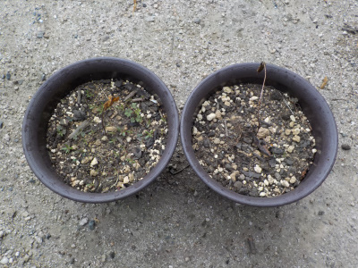
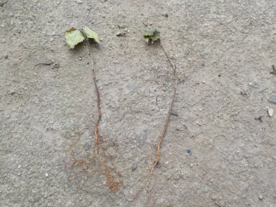
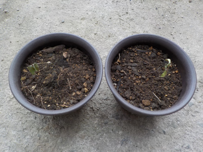

ヤマボウシは枯れました。
2023/05/28

残念な結果となりました。
またどこかの山に行って採取したいけど、行く予定はないな。
2023/05/28

残念な結果となりました。
またどこかの山に行って採取したいけど、行く予定はないな。
2023/05/05

ヤマボウシの木の下に、小さい苗が沢山生えていたので2本持って帰りました。
持って帰って直ぐ土に植えればよかったんですが、色々あって出来なくて、乾燥して硬くなってしまいました。

今から復活出来るかな？
以前は山で見ましたが、近ごろはあちこちで見ます。